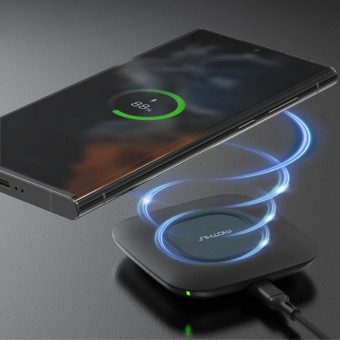

물리학에 한 획을 그은 패러데이
패러데이는 어린 시절에 정식 교육을 거의 받지 못했지만, 역사적으로 매우 훌륭한 과학자로 남아있다.
물리학에서, 패러데이는 전자기장에 대한 기본적인 개념을 확립하는 직류가 흐르는 도체 주위의 자기장에 대한 연구를 했으며, 자성이 광선에 영향을 미칠 수 있다는 것과 그들 사이의 근본적인 관계가 있다는 것 또한 확립하였다.
패러데이는 그의 생각들을 매우 명료하고 간단한 언어로 표현한 훌륭한 실험주의자였다.
패러데이의 발견은 오늘날까지도 수학과 과학 분야에서 높이 평가되고, 그의 수많은 공헌들은 계속해서 연구와 학문의 발전에 영향을 끼치고 있습니다.
패러데이는 물리학에서 전자기 유도 법칙을 설명한 대단한 인물이다. 고리 모양의 도선으로 만들어진 코일을 통과하는 자기장이 시간에 따라 변하면 코일에 전류가 유도되는 현상을 전자기유도라고 한다.
코일을 통과하는 자기선속의 시간에 따른 변화가 코일에 유도기전력을 발생시키기 때문이라고 설명하였다. "마이클 패러데이의 업적 요약"
| 연번 | 업적 |
|---|---|
| 1 | 전자기유도의 발견 |
| 2 | 전기 분해 법칙 |
| 3 | 자기와 빛의 관계 설명 |
일상생활까지 영향을 미치는 물리학
전자기 유도 현상은 오늘날에 정말 많이 활용된다. 그 중 무선충전패드를 소개하겠다.
무선 충전 패드는 송신기가 전기를 사용하여 자기장을 생성하고, 수신기를 통해 해당 자기장을 감지하여 전기 에너지로 변환합니다. 이렇게 생성된 전기 에너지는 무선 충전이 필요한 장치로 전송되어 내부 배터리를 충전하며, 케이블이나 플러그 없이 간편한 무선 충전을 가능케 합니다.
무선충전패드와 같이 학문적 개념에서 일상생활에 까지 적용되는것이 흥미롭다. 학문이 발전하여 또 다른 기술이 발전하는 그날이 기다려진다.